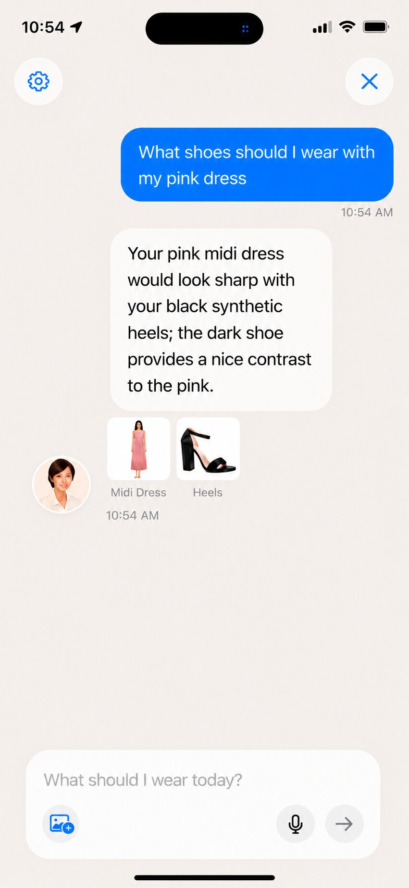

Wearra topic guide
AI Stylist App for iPhone
How Wearra works as an AI stylist app that gives outfit guidance from a user's own wardrobe.

Direct answer: Wearra is an AI stylist app for iPhone that connects chat-based styling advice to a user's digital closet, saved outfits, outfit planner, packing lists, and virtual Try On workflow.
Why closet context matters
An AI stylist is more practical when it can recommend outfits from items the user has actually saved, instead of giving generic style advice.
Example prompts
Users can ask what to wear to an interview, how to style one dress three ways, what to pack for a trip, or which shoes work with a saved outfit.
From advice to action
Wearra's stylist chat sits inside the same app as outfit saving, planning, packing, and Try On, so advice can become an outfit decision.
Core Wearra features
- AI Stylist chat
- Closet-aware outfit prompts
- Occasion and weather context
- Saved looks
- Try On and planning actions
Comparison
| Option | Strength | Tradeoff |
|---|---|---|
| Generic chatbot | Flexible questions | No built-in closet |
| Human stylist | Personal judgment | More expensive and less immediate |
| Wearra | Closet-aware styling inside an iPhone workflow | AI suggestions still need user review |
Related Wearra guides
FAQ
Does Wearra include an AI Stylist?
Yes. Wearra includes AI Stylist chat as part of its styling workflow.
Can I ask about occasions?
Yes. Users can ask for outfit ideas for work, travel, events, casual plans, and dress codes.
Are chat turns stored?
AI Stylist chat turns are logged to Firestore as described in Wearra's privacy policy.
Try Wearra
Wearra is free to download for iPhone. Try On requires Pro, bonus credits, or a render pack.